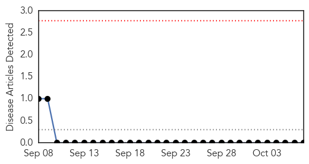
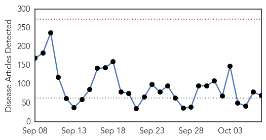

Mumps
30-Day Web Trend
0 alerts, 0 warnings

30-Day Twitter Trend
0 alerts, 0 warnings

Article Locations

Article Confidences

Top Articles:
-
No articles found for Oct 07, 2014
Top Tweets:
-
No tweets found for Oct 07, 2014
Unknown
30-Day Web Trend
0 alerts, 0 warnings

30-Day Twitter Trend
2 alerts, 0 warnings

Article Locations

Article Confidences

Top Articles:
- 0.998
- US child dies from cold-like virus
- 0.998
- 6 Things you Need to Know about the Enterovirus 68 Outbreak
- 0.994
- Enterovirus death reported as outbreak apparently wanes
- 0.990
- 3 new cases of deadly virus reported in N.C.
- 0.984
- Girl treated in Tampa is Florida's first case of enterovirus D68
- 0.984
- Enterovirus D68: Hundreds diagnosed across United States as disease claims its first victim
- 0.979
- Why the mysterious, new enterovirus outbreak is baffling experts
- 0.973
- Enterovirus EV-D68 Facts: Should We Fear Infectious Respiratory Disease Targeting Children?
- 0.955
- Enterovirus D68: Five children being tested for virus at Children's Hospital Philadelphia
- 0.947
- Number of Marburg suspects raise to eight
- 0.942
- Ministry of Health monitoring suspected Marburg cases
- 0.933
- 11 suspects test negative
- 0.933
- West Hawaii Today
- 0.921
- Here's How to Protect Yourself From Enterovirus
- 0.917
- Chicago Tribune
- 0.917
- Chicago Tribune
- 0.917
- Chicago Tribune
- 0.917
- Chicago Tribune
- 0.917
- Chicago Tribune
- 0.917
- Chicago Tribune
- 0.917
- Chicago Tribune
- 0.917
- Chicago Tribune
- 0.917
- Chicago Tribune
- 0.917
- Chicago Tribune
- 0.917
- Chicago Tribune
- 0.917
- Chicago Tribune
- 0.917
- Chicago Tribune
- 0.917
- Chicago Tribune
- 0.917
- Chicago Tribune
- 0.917
- Chicago Tribune
- 0.917
- Chicago Tribune
- 0.917
- Chicago Tribune
- 0.917
- Chicago Tribune
- 0.917
- Chicago Tribune
- 0.917
- Chicago Tribune
- 0.917
- Chicago Tribune
- 0.914
- Correction: Tuberculosis Exposure-Texas-Q&A story
- 0.903
- Salt Lake Board of Health meets to discuss the latest on
- 0.899
- Paralysis Symptoms Occurring In 12th Colorado Child
- 0.866
- News, Information and Connections for Action
- 0.866
- Four dead as Kurdish protests in Turkey over besieged Syrian town turn violent
- 0.866
- Nebraska hospital says treating its Ebola patient with Chimerix drug
- 0.866
- Husband of Spanish nurse with Ebola under quarantine
- 0.864
- Patient at Texas Children's Hospital tests negative for enterovirus
- 0.864
- Patient at Texas Children's Hospital tests negative for enterovirus
- 0.848
- Preschools Mandating Flu Shots in Some States
- 0.825
- Carrots and lettuce cause outbreak in Bay
- 0.825
- Polk girl, 10, treated in Tampa for enterovirus
- 0.817
- E. coli outbreak at hospital associated with contaminated specialized GI endoscopes
- 0.807
- First Enterovirus D-68 Death in U.S.
Showing top 50 articles...
Top Tweets:
- 0.923
- .@TheDingoDad There are strains of flu but usually 3-4 strains commonly cause disease in humans during a given flu season FluPlusYou
- 0.762
- .@kdevito You can use the Flu Vaccine Finder to find flluvax near you including the nasal spray flu vaccine FluPlusYou
- 0.645
- CDC doesn't recommend any one flu vaccine option over another for people in other age groups besides kids 2-8 yrs. FluPlusYou
- 0.639
- More kids got a flu vaccine last year compared to adults. Remember healthy adults can also get sick with flu FluPlusYou
- 0.567
- CDC doesn’t recommend any one flu vaccine option over another for people in age groups other than 2-8 yrs. FluPlusYou
- 0.551
- If your child does get sick with flu a doctor may prescribe flu antiviral drugs to treat flu illness http://t.co/zcbyRhCfKC FluPlusYou
- 0.536
- .@mariachen88 fever chills fatigue body aches sore throat & headache are all common symptoms of flu. FluPlusYou
- 0.513
- Paramount Chiefs in Sierra Leone: "our role in the fight against the spread of the disease is important" http://t.co/8x1eN6wsQ6